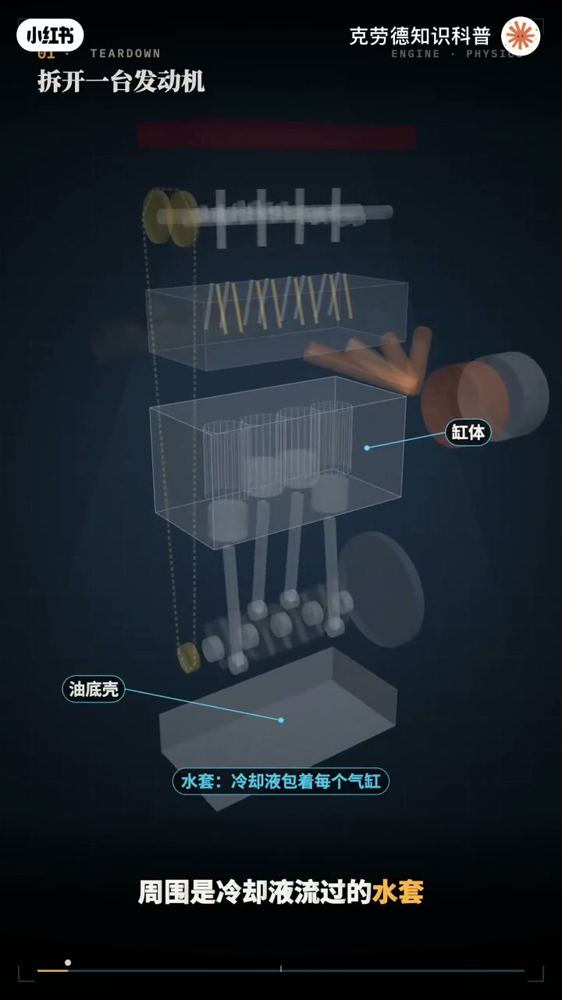
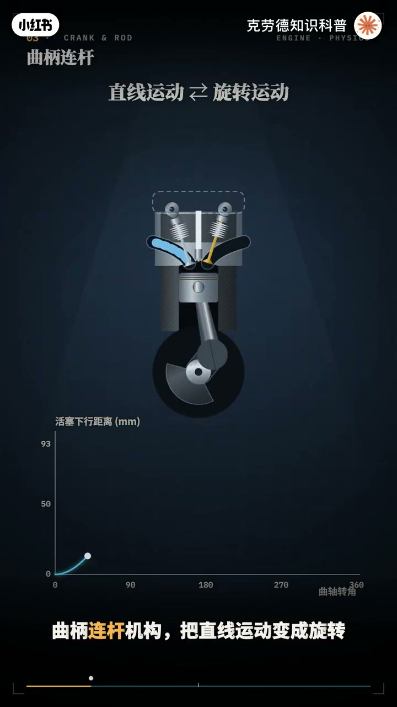
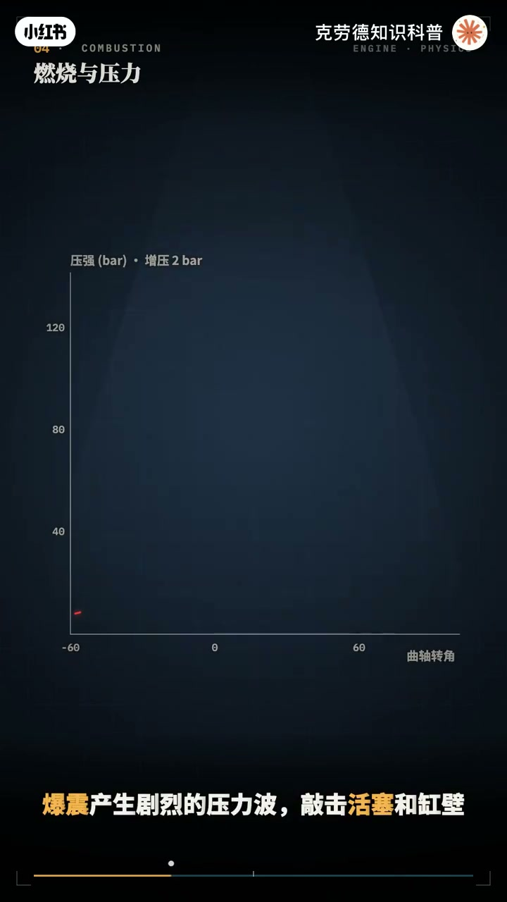
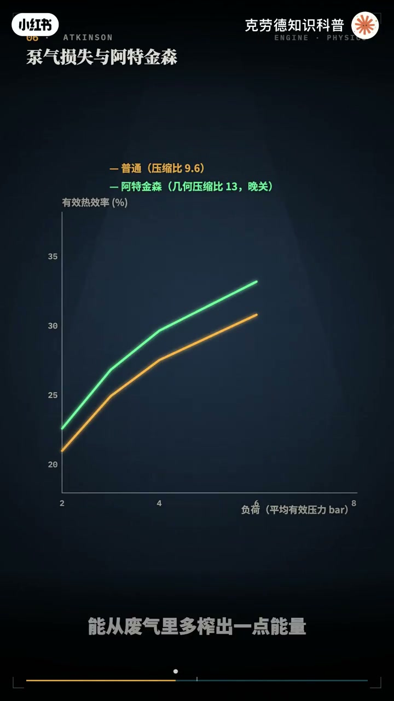
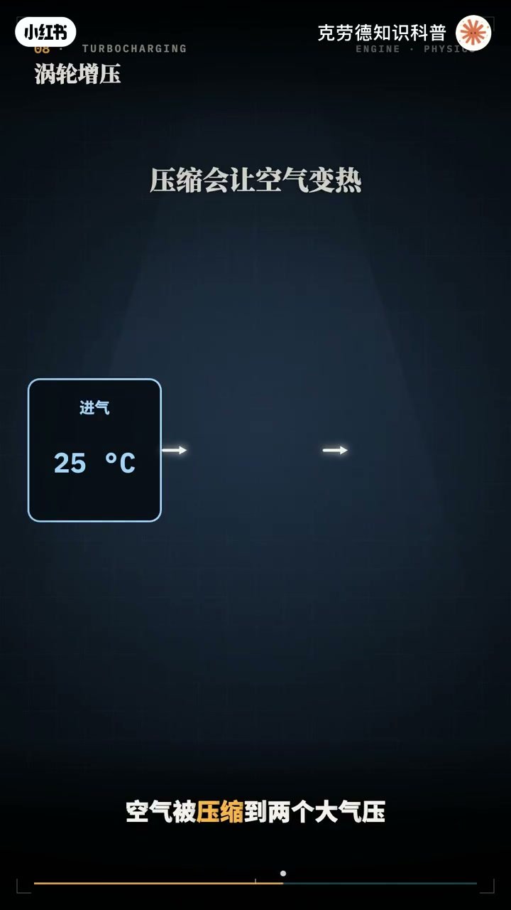
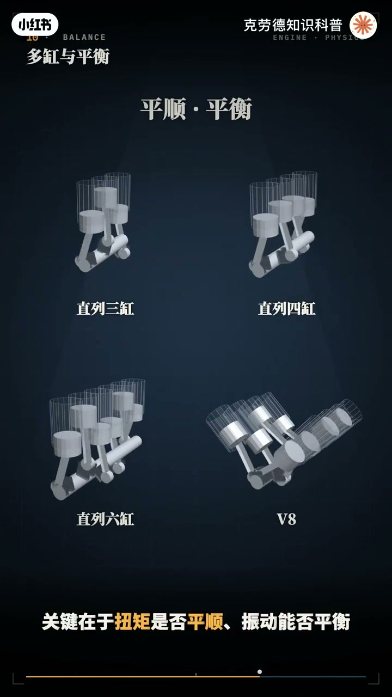
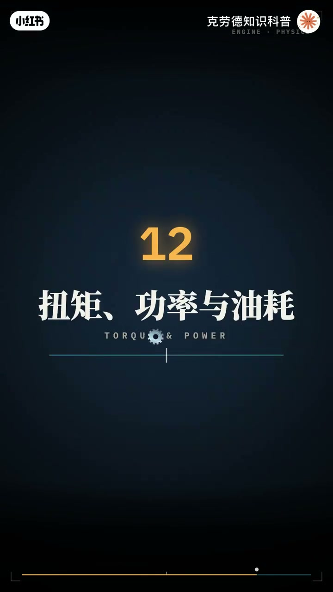
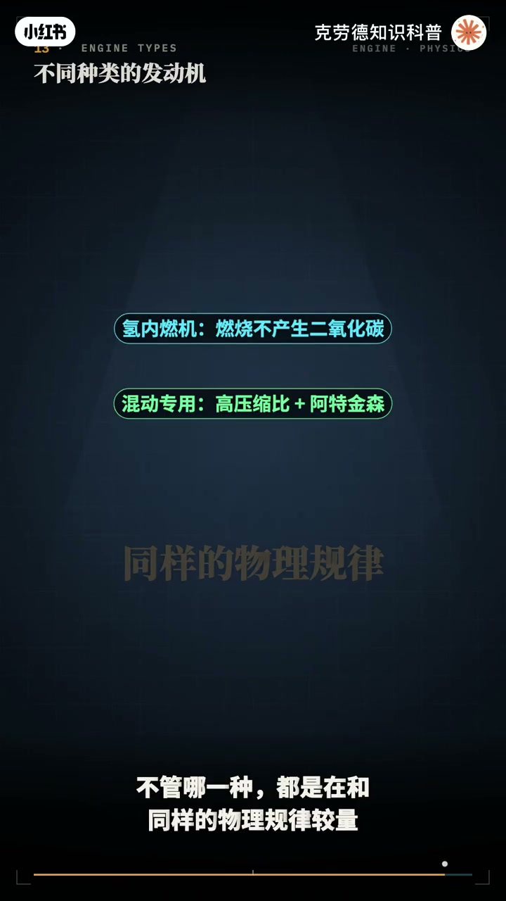

内容要点
「硬核动画拆解发动机原理」教程要点：一台两升涡轮发动机 → 在每分钟6000转的时候 → 每个活塞每秒要上下跑100趟 → 最大加速度超过2400G；详见正文。
知识结构
一台两升涡轮发动机
牺牲一点效率来换安全
三元催化器
- 一台两升涡轮发动机
- 在每分钟6000转的时候
- 每个活塞每秒要上下跑100趟
- 最大加速度超过2400G
- 每一次燃烧
一台两升涡轮发动机
00:00–02:41一台两升涡轮发动机
一台两升涡轮发动机；在每分钟6000转的时候；每个活塞每秒要上下跑100趟；最大加速度超过2400G；每一次燃烧；钢里的压强冲到90多个大气压；温度超过2000度；可燃油的能量里；真正变成动力的只有三成多；剩下的都去了哪；这期视频；我们用物理引擎；把发动机一层一层拆开；结构 原理 数据；还有各种发动机的区别；一次讲透；我们以一台典型的两升涡轮；直列四缸为例；把它一层一层拆开；最下面是有底壳；装着机油；上面是钢体；四个气缸就藏在里面；周围是冷却液流过的水套；气缸里是活塞；活塞上有三道活塞环；上面两道密封燃气；最下面一道；刮掉缸壁上多余的机油；活塞通过活塞销和连杆；连到曲轴上；曲轴把活塞的上下运动；变成连续的旋转；再通过飞轮输出；钢体上面是缸盖；每个气缸有四个气门；一个火花塞；和一个喷油嘴；头顶是两根凸轮轴；凸轮轴通过正实链条和曲轴；严格同步；两侧是进气气管和排气气管；排气后面；接着涡轮增压气；发动机的一个工作循环；有四个冲程；曲轴要转两圈；也就是720度；第一 进气；活塞下行；进气门打开；新清空气被吸进气缸；喷油嘴；喷入汽油；第二 压缩；两个气门都关闭；活塞上行；把混合器压缩到原来的九分之一左右；物理引擎算出；压缩终点的压墙；有20多个大气压；温度400多度；第三 做工；活塞接近顶部时；火花塞跳火；火焰在几毫秒内；烧遍整个燃烧室；压墙冲到峰值；把活塞猛推下去；第四 排气；排气门打开；活塞上行；把废气推出去；四个冲程里；只有做工这一个；在输出动力；所以；四缸发动机；让四个气缸轮流做工；曲轴每转半圈；就有一个气缸在燃烧；曲柄连杆机构；把直线运动变成旋转；但活塞的运动；一点都不均匀；每分钟6千转时；活塞的平均速度；是每秒18.6米；最快的时候；超过每秒30米；而在上指点；活塞要在一瞬间掉头；加速度达到2400G；半公斤重的活塞组件；会用一吨多的力；拉扯连杆；惯性力和转速的平方程正比；转速翻倍；惯性力变成四倍；这也是普通发动机红线；停在六七千转的原因之一；连杆还带来一个不对称；活塞在上半程；走得比下半程快；这一点不对称；就是后面要讲的；二阶震动的来源；钢镜和行程的比例也有讲教；长行程适合低转油举和省油；大钢镜能装下更大的气门；适合高转速；现在看杆内的压强；物理引擎一边转动曲轴；一边算出每一度的压强和温度；把压强和气缸融集化在一起；就得到施工图；这个环保围的面积；就是一次循环做地工；点火时机很关键；点的太晚；燃烧拖到活塞下行以后；压强起不来；点的太早；活塞还在上行；就要和燃烧对着干；物理引擎扫描点火脚；最佳的位置让一半燃料；在上指点后十度左右烧完；扭举最大；但增压越高；压缩越狠；还没烧到的那部分混合器；会被挤压加热到自己爆炸；这就是爆震；爆震产生剧烈的压力波；敲击活塞和钢壁；所以波轮发动机在大负荷时；只能推迟点火


02:39–05:26牺牲一点效率来换安全
牺牲一点效率来换安全；燃油的能量去哪吗；物理引擎给这台发动机；记了一笔账；在中等负荷；大约三乘四变成曲轴上地宫；两乘三倍冷却液带走；将近四乘根据废弃排出；还有三个多点号在摩擦上；想提高效率；最直接的办法是提高压缩比；理论上压缩比从10提高到14；效率上限能从6乘提高到6乘5；但压缩比越高；越容易爆震；丰田的2.0升发动机；把压缩比做到13；热效率40%；混动版做到14%；41%；中国的混动专用发动机更进一步；比亚迪宣布46.06%；吉利宣布46.5%；重型柴油机；维柴已经做到了53%；日常开车；发动机大部分时间；只用很小的负荷；这世界气门几乎关闭；活塞要使劲；把空气从很低的压墙里吸进来；这叫蹦气损失；物理引擎算出；每分钟2000转；小负荷时；蹦气损失；失掉了两成地宫；效率只剩2成1；阿特金森循环的办法；是让静气门网关；活塞上行的前一段；把一部分空气推回静气道；实际的压缩充成变短；膨胀充成却不变；膨胀比大于压缩比；能从废气里多榨出一点能量；同时；节气门可以开得更大；蹦气损失也小了；物理引擎算出；同样的负荷；效率能提高2个百分点左右；代价是同样排量出力更小；所以；它最适合有电机帮忙的混动车；米勒循环则是静气门早关；再用涡轮把空气补回来；控制静气和排气的；是配气机构；凸轮轴上的凸轮；每转一圈；就把气门顶开一次；凸轮轴的转速；只有曲轴的一半；因为四个充成要转两圈；每个气门只开一次；一个气门；大约开200多度曲轴转角；最大生成；只有1厘米左右；在每分钟6000转时；每个气门每秒开合50次；静气门和排气门；同时打开的那一小段；叫气门重叠；高转速时重叠大一点；泄气流的惯性；多吸进空气；低转速时重叠小一点；带速更稳；可变气门正时；就是用油压转动凸轮轴的向位；在不同工况下；改变气门的开关时刻；有的发动机；还能切换凸轮；改变气门生成；发动机能出多大力；取决于每次能吸进多少空气；自然吸气发动机；最多只能吸进；大约一个大气压的空气；涡轮增压器；用废气推动涡轮；涡轮带动同一根轴上的压气机；把空气压缩后；小涡轮的转速；可以超过每分钟20万转；空气被压缩到两个大气压；温度会升到100多度；所以中间要用中冷气降温；让同样的体积装进更多空气；物理引擎；同一台两升发动机；不增压最大扭矩160多牛米；增压到两个大气压；从1500转开始就有350牛米；代价是涡轮持质；低转速时；废气能量不够；涡轮转不起来；现在的发动机；用小半辆涡轮；双涡管；甚至电动涡轮来解决；机械增压；则直接由曲轴驱动；没有持质；但要消耗发动机；自己的一部分功率；燃油怎么进入气缸；早期是在进气道里喷油；现在主流是缸内直喷；大众这台发动机的喷油压强；从280提高到358；最新一代达到580；压强越高；油污越细；燃烧越干净；直喷的另一个好处是；汽油在缸内蒸发时会吸热；给混合器降温；让发动机更不容易暴震；压缩比可以做得更高；汽油机靠火花塞点火；几万伏的高压机；传点集间的空气；空燃表控制在14.7比1附近


05:25–08:14三元催化器
三元催化器；才能同时净化三者污染物；柴油机没有火花塞；压缩比16以上；物理引擎算出；压缩终点的空气将近600度；柴油一喷进去；就会自燃；共轨系统的喷油压强；超过2800；为什么有三缸；四缸；六缸；八缸；关键在于；牛举是否平顺；振动能否平衡；物理引擎把每个七缸的牛举；叠加起来；单缸的牛举忽正忽负；四缸在两次做工之间；仍会掉到负值；六缸的牛举始终为正；八缸更平；振动来自往复运动的惯性力；直列四缸的一阶力；正好两两抵消；但二阶力全部同向叠加；每分钟6000转时；超过1万牛；所以很多四缸要加平横轴；直列三缸的一阶；二阶力都能抵消；却留下一个；让发动机前后摇摆的力矩；这就是三缸带速抖动的来源；直列六缸；一阶；二阶的力和力矩；全部自己平衡；所以被称为最平顺的布局；C型和水平对峙；是为了把发动机做短；做矮；水平对峙的活塞两两对冲；惯性力互相抵消；重心也最低；发动机内部的金属；大多不是直接接触的；曲轴轴承和缸壁上；只隔着机微米后的油膜；机油泵把机油压到每个摩擦面；再通过活塞底部的喷嘴；冷却活塞；机油一旦断流；几秒钟就能把轴瓦烧坏；冷却系统；要带走两成多的燃油能量；节温器让冷却液保持在90度左右；冷车时先不让冷却液流过散热器；帮助发动机快速升温；冷车时既有粘稠；摩擦损失明显更大；燃烧时也更容易积碳；所以冷车阶段的油耗和磨损都更高；再看参数表上的两个数字；扭矩和功率；扭矩是曲轴的转动力；取决于每次燃烧做多少功；功率等于扭矩乘以转速；决定了加速和极速的上限；物理引擎算出这台发动机的外特性；350牛米从1500转保持到4000多转；功率在4500转达到162000瓦；然后维持到6000多转；再看效率地图；效率最高的区域；在中等转速大富贺的地方；轻踩油门巡航时；发动机其实在低效区工作；所以混动车的思路；是让发动机尽量只在高效区工作；多余的能量存进电池；需要时再用电机放出来；最后比较几种不同的发动机；茶油机压缩比高；没有节气门；混合气息；物理引擎算出它的效率；比汽油机高出几个百分点；低转油举也大；代价是更重更贵；维修处理更复杂；转子发动机；一个三角形转子；在枪体里旋转；三个枪是同时完成四个冲程；它体积小；转速高；非常平顺；但密封困难；油耗偏高；二冲程发动机；去轴每转一圈就做工一次；结构简单；功率大；但换气时；会有一部分新鲜混合气直接跑掉；现在主要用在小型机械上；还有正在发展的氢内燃机；以及只为混动设计的高效发动机；不管哪一种；都是在和同样的物理规律较量；最后；用几句话带走发动机的全部要点；四个冲程；去轴两圈；进气；压缩；做工；排气；6000转时；搏塞加速度2400个G；惯性力随转速平方增长；三成多变成动力；其余变成热；压缩比；阿特金森和混动；都是为了多抢回一点；涡轮板扭矩翻倍；直喷合可变气门；让它更高效；直6最平顺；4缸靠平衡轴；3缸天生汇通；几千的零件；每分钟几千次爆炸；把燃油变成前进的力量




口述/画面要点（40段）
结合 Whisper medium 与画面大字整理；专有名词已校对。
一台两升涡轮发动机
在每分钟6000转的时候
每个活塞每秒要上下跑100趟
最大加速度超过2400G
每一次燃烧
钢里的压强冲到90多个大气压
温度超过2000度
可燃油的能量里
真正变成动力的只有三成多
剩下的都去了哪
这期视频
我们用物理引擎
把发动机一层一层拆开
结构 原理 数据
还有各种发动机的区别
一次讲透
我们以一台典型的两升涡轮
直列四缸为例
把它一层一层拆开
最下面是有底壳
装着机油
上面是钢体
四个气缸就藏在里面
周围是冷却液流过的水套
气缸里是活塞
活塞上有三道活塞环
上面两道密封燃气
最下面一道
刮掉缸壁上多余的机油
活塞通过活塞销和连杆
连到曲轴上
曲轴把活塞的上下运动
变成连续的旋转
再通过飞轮输出
钢体上面是缸盖
每个气缸有四个气门
一个火花塞
和一个喷油嘴
头顶是两根凸轮轴
凸轮轴通过正实链条和曲轴